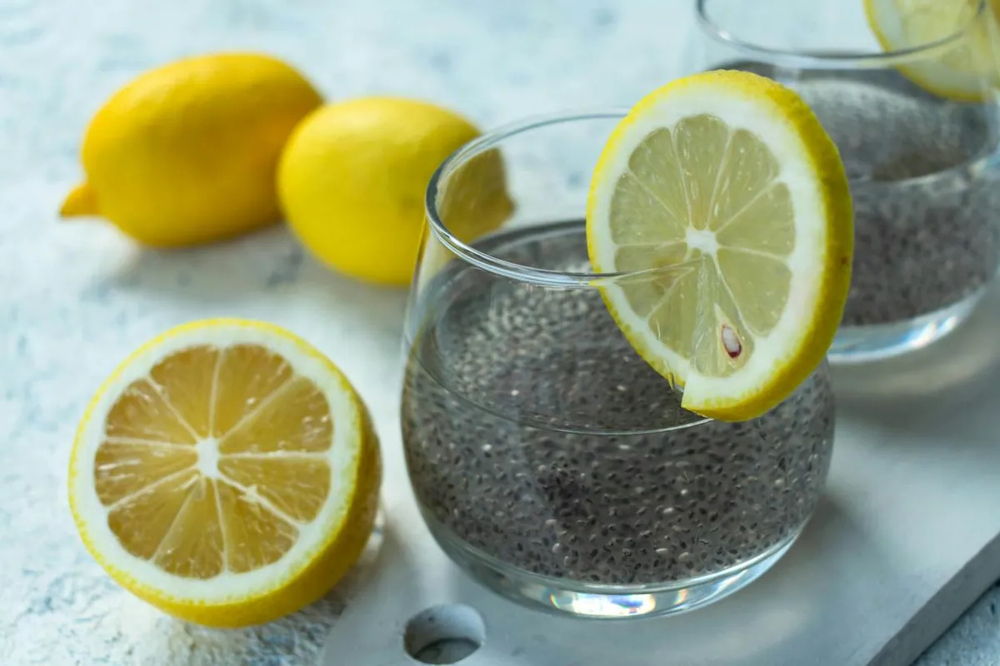

Élixirs naturels · 4 min de lecture
Élixir aux Graines de Chia : le rituel naturel pour nourrir le corps, soutenir l’énergie et hydrater en profondeur


Introduction
Dans un monde où l’on mange vite, où l’on s’hydrate mal et où le corps est souvent sollicité sans être réellement nourri, de nombreux déséquilibres apparaissent :
fatigue diffuse, troubles digestifs, fringales, baisse d’énergie ou récupération insuffisante.
La solution n’est pas toujours plus complexe. Parfois, elle réside dans des aliments simples, complets et intelligemment utilisés.
Aujourd’hui, je te présente un élixir naturel à base de graines de chia, un super-aliment ancestral aux propriétés nutritionnelles exceptionnelles.
Associées à des ingrédients parfaitement synergétiques, les graines de chia deviennent un véritable carburant naturel pour le corps, la digestion et l’énergie vitale.
👉 Je tiens à vous rappeler une règle d’or que j’aime beaucoup et qui guide mes choix au quotidien : si la nature ne l’a pas créé, ne le buvez pas.
Le problème
Beaucoup de personnes souffrent aujourd’hui de :
fatigue chronique,
digestion lente ou inconfortable,
déshydratation malgré une consommation d’eau suffisante,
fringales incontrôlées,
manque d’énergie stable dans la journée.
Ces signaux sont souvent liés à un déséquilibre nutritionnel, un manque de fibres, de bons gras et de micronutriments essentiels.
Le corps n’a pas besoin de plus de calories… il a besoin de meilleure qualité nutritionnelle.
La promesse
L’élixir aux graines de chia agit comme un nourrissant complet et intelligent.
Il hydrate en profondeur, soutient la digestion, stabilise l’énergie et nourrit les cellules, tout en douceur et sans surcharge digestive.
Ce n’est pas une boisson miracle.
C’est un rituel de fond, qui soutient le corps jour après jour.
Les bénéfices
Une énergie plus stable et durable
Une meilleure digestion et un transit régulé
Une hydratation profonde et cellulaire
Une réduction des fringales
Un soutien global de la vitalité physique
🌿 Pourquoi ce remède est efficace
Les graines de chia sont exceptionnellement riches en :
fibres solubles,
oméga-3,
protéines végétales,
minéraux essentiels (magnésium, calcium, fer).
Au contact de l’eau, elles forment un gel naturel qui :
ralentit l’absorption des sucres,
prolonge la sensation de satiété,
nourrit la flore intestinale,
favorise une hydratation progressive et durable.
Associées au citron, au miel et parfois au gingembre, elles deviennent hautement assimilables et offrent une action globale sur l’énergie, la digestion et l’équilibre métabolique.
💪 Les bienfaits de l’élixir aux graines de chia
Hydratation profonde du corps
Le gel de chia aide à retenir l’eau et à hydrater les cellules durablement.Soutien de la digestion et du transit
Les fibres nourrissent le microbiote et facilitent un transit régulier.Stabilisation de l’énergie
Les oméga-3 et les fibres évitent les pics et chutes d’énergie.Réduction des fringales
L’effet satiétant aide à mieux gérer l’appétit.Soutien musculaire et récupération
Les protéines et minéraux participent à la récupération physique.
🍋 La recette de l’Élixir Vitalité & Hydratation aux Graines de Chia
Ingrédients (alchimie optimale)
1 cuillère à soupe de graines de chia
250 ml d’eau pure
Le jus d’½ citron frais
1 cuillère à café de miel brut (optionnel)
Une pincée de gingembre râpé (facultatif)
Pourquoi cette synergie fonctionne ?
Les graines de chia nourrissent et hydratent.
Le citron stimule la digestion et l’assimilation.
Le miel apporte une énergie douce et minérale.
Le gingembre soutient la digestion et la circulation.
Préparation
Verse les graines de chia dans l’eau.
Mélange et laisse reposer au minimum 15 à 30 minutes (idéalement 1 à 2 heures).
Ajoute le citron, le miel et le gingembre.
Mélange à nouveau et bois lentement.
⏰ Comment l’utiliser
À consommer 1 fois par jour, idéalement :
le matin à jeun,
ou avant une activité physique.
Peut être consommé en cure quotidienne ou intégré à une routine bien-être.
Pense à bien t’hydrater dans la journée.
👥 À qui s’adresse ce rituel
À ceux qui manquent d’énergie stable
Aux personnes ayant une digestion lente ou sensible
À ceux qui veulent mieux s’hydrater naturellement
Aux sportifs et personnes actives
À toute personne souhaitant un rituel simple, naturel et nourrissant
⚠️ Précautions
Toujours faire tremper les graines de chia avant consommation.
Commence par de petites quantités si tu n’y es pas habitué.
Bois suffisamment d’eau dans la journée.
En cas de troubles digestifs sévères, demande conseil à un professionnel de santé.
🌱 Conclusion & appel à l’action
L’élixir aux graines de chia est un rappel puissant :
le corps n’a pas besoin de complexité, mais de constance, de qualité et de respect.
C’est un rituel simple, mais profondément efficace, qui soutient l’énergie, la digestion et l’équilibre global, jour après jour.
👉 Si la nature ne l’a pas créé, ne le buvez pas.
Je partage régulièrement des élixirs, rituels et ressources bien-être pour t’aider à nourrir ton corps avec intelligence et simplicité.
📚 Je suis auteur bien-être sous le pseudo Chest0 JM.S., mes ouvrages sont disponibles sur Amazon.
🔗 Retrouve tout mon univers ici :
👉 https://linktr.ee/Chest00
👉 Si tu veux aller plus loin, découvre aussi notre
Plus de 40 recettes d'élixirs dans les livres Chest0.
Voir les livres